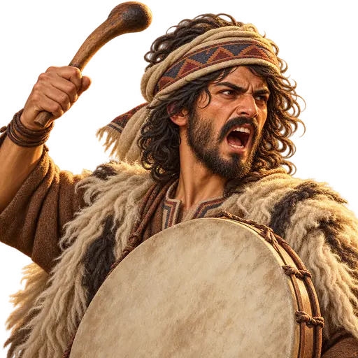
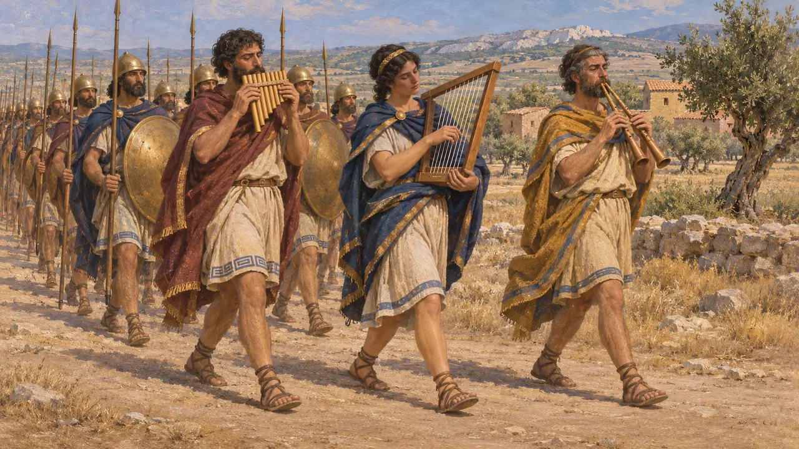
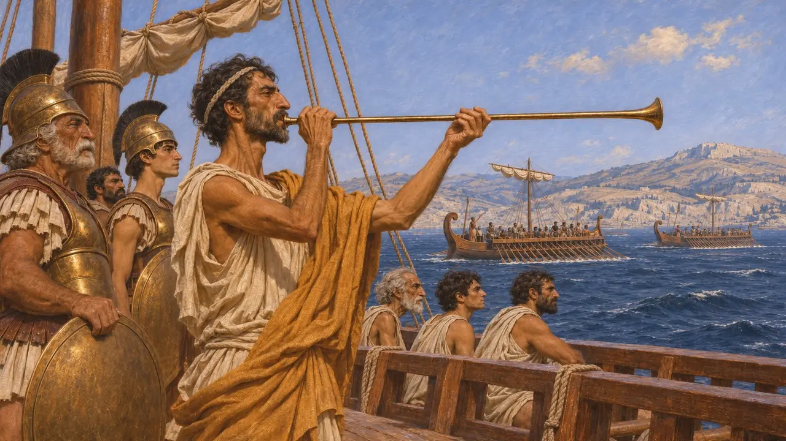
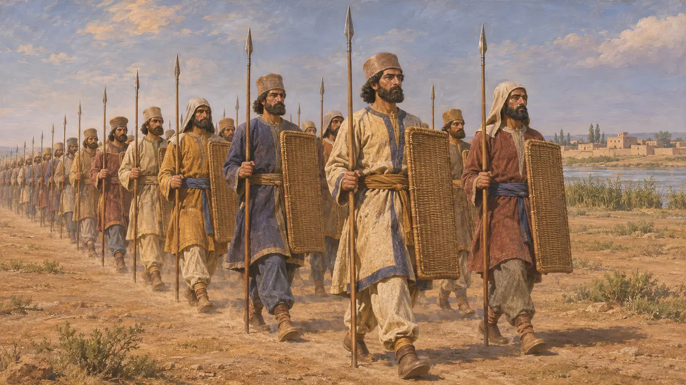
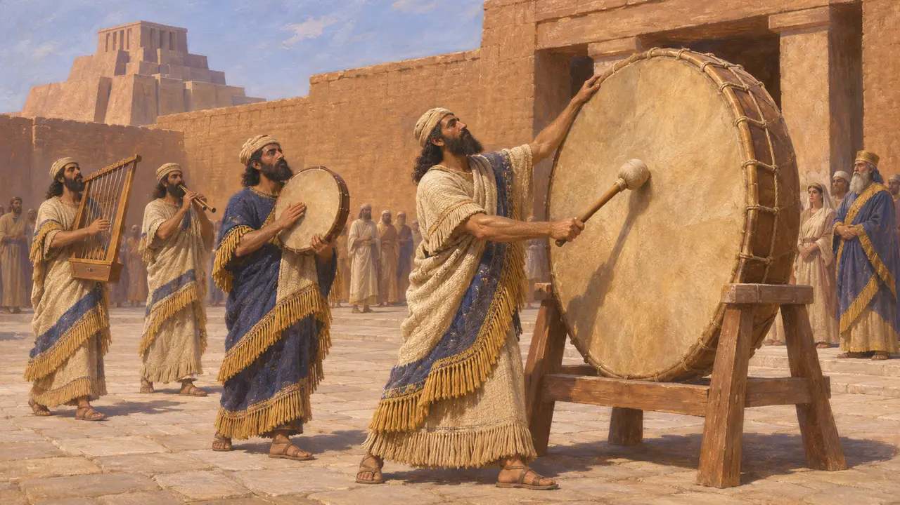
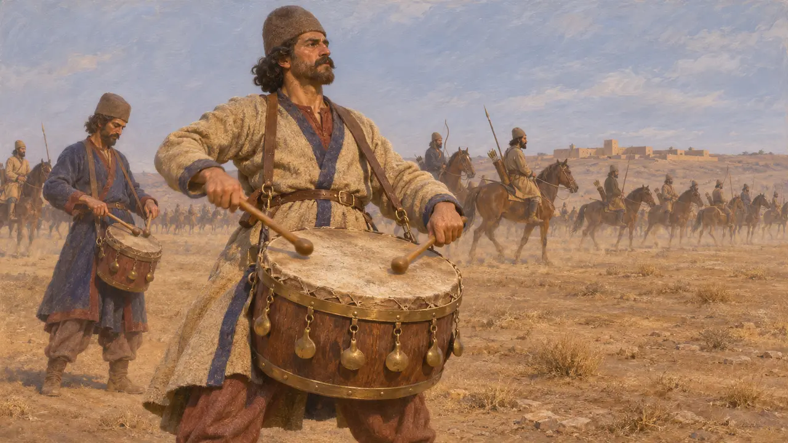

战鼓手
围城战中为国王之敌传递信号的人，公元前530至前479年的游戏人物
战鼓手代表那些让进攻部队步调一致并为其发出号令的人。这一时期的古代军队确实在战斗中使用声响，但史料提到笛、号和呐喊的远多于鼓。当时没有任何史料描述过由鼓手率领攻城。
游戏中： 战鼓手（其名称随关卡而变）在城门前擂鼓催动敌军进攻；城墙上的弓箭手可以射到他。他是游戏虚构的角色：当时史料提到战争中用的是笛与号，而非鼓。

行军途中的笛与竖琴
古代记述希罗多德记载，吕底亚的阿律阿铁斯每年侵袭米利都领地时，其军队伴着排箫、竖琴和管笛之声行进。修昔底德在记述较晚的公元前418年曼丁尼亚之战时，描写斯巴达人随着众多吹笛手的乐声缓缓推进。他解释说，这并非出于宗教，而是为了让阵线步调一致，以免在逼近敌军时阵形散乱。
Herodotus 1.17; Thucydides 5.70

号角为令
古代记述希腊的军队和舰队以萨尔平克斯——一种直管青铜号——发号施令。曾与波斯人作战的埃斯库罗斯，在《波斯人》中借信使之口讲述，在萨拉米斯，一声号角令希腊战船士气如火。色诺芬的《长征记》也提到以号声发出进军和拔营的信号。
Aeschylus, Persians; Xenophon, Anabasis

国王大军静默前进
古代记述公元前401年亲历库纳克萨之战的色诺芬记载，希腊人原以为国王的军队会呐喊着冲来，不料对方却尽可能悄无声息地推进，队列缓慢而齐整。这场战役晚于本游戏的时代，却是少数描述波斯王军行进时声响的亲历记载之一。其中丝毫未提及战鼓。
Xenophon, Anabasis 1.8.11

近东的鼓
见于史载鼓在美索不达米亚广为人知，神庙仪式中会演奏大鼓。亚述宫殿浮雕（雕刻年代比本游戏所处时期早一个多世纪）描绘了手持框鼓、管乐器和竖琴的乐师，多见于典礼和凯旋游行。同样的浮雕详细描绘了攻城场面，有攻城槌、弓箭手、投石手和云梯，却没有描绘鼓手催促士兵攻城的情景。
Assyrian palace reliefs, Nimrud and Nineveh

伊朗战鼓：一份较晚的证据
争夺中普鲁塔克记载，公元前53年卡莱之战中，帕提亚人在进攻前敲击挂有青铜饰件的空心战鼓，以震慑罗马人。有些作者推测更早的伊朗军队也有同样做法，但没有任何阿契美尼德时期的史料能够证实。希腊人的鼓，即提姆帕农鼓，主要用于狄俄尼索斯和众神之母的祭仪，而非战争。
Plutarch, Crassus 23; M. L. West, Ancient Greek Music, 1992
来源
- Herodotus 1.17
- Thucydides 5.70
- Xenophon, Anabasis 1.8.11
- Aeschylus, Persians
- Plutarch, Crassus 23
- M. L. West, Ancient Greek Music, 1992